statgenHTP tutorial: 1. Introduction, data description and preparation
Emilie Millet, Bart-Jan van Rossum
2025-07-02
Source:vignettes/vignettesSite/Intro_HTP.Rmd
Intro_HTP.RmdThe statgenHTP Package
The statgenHTP package is developed as an easy-to-use package for analyzing data coming from high throughput phenotyping (HTP) platform experiments. The package provides many options for plotting and exporting the results of the analyses. It was developed within the EPPN2020project to meet the needs for automated analyses of HTP data.
New phenotyping techniques enable measuring traits at high throughput, with traits being measured at multiple time points for hundreds or thousands of plants. This requires automatic modeling of the data (Tardieu et al. 2017) with a model that is robust, flexible and has easy selection steps.
The aim of this package is to provide a suit of functions to (1) detect outliers at the time point or at the plant levels, (2) accurately separate the genetic effects from the spatial effects at each time point and (3) estimate relevant parameters from a modeled time course. It will provide the user with either genotypic values or corrected values that can be used for further modeling, e.g. extract responses to environment (Eeuwijk et al. 2019).
Structure of the package
The overall structure of the package is in 6 main parts:
- Data description and preparation - statgenHTP tutorial: 1. Introduction, data description and preparation
- Outlier detection: single observations - statgenHTP tutorial: 2. Outlier detection for single observations
- Correction for spatial trends - statgenHTP tutorial: 3. Correction for spatial trends
- Outlier detection: series of observations - statgenHTP tutorial: 4. Outlier detection for series of observations
- Modeling genetic signal - statgenHTP tutorial: 5. Modelling the temporal evolution of the genetic signal
- Parameter estimation - statgenHTP tutorial: 6. Estimation of parameters for time courses
This document describes in detail the three data sets used to exemplify the functions. It also contains descriptions on how to prepare the data for analysis and how to visualize them.
Data description
Example 1: photosystem efficiency in Arabidopsis
The first example used in this package contains data from an experiment in the Phenovator platform (WUR, Netherlands, (Flood et al. 2016)) with Arabidopsis plants. It consists of one experiment with 1440 plants grown in a growth chamber with different light intensity. The data set called “PhenovatorDat1” is included in the package.
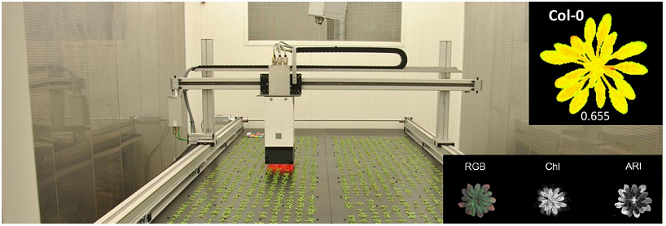
The number of tested genotypes (Genotype) is 192 with
6-7 replicates per genotype (Replicate). Four reference
genotypes were also tested with 15 or 30 replicates. The studied trait
is the photosystem II efficiency (EffpsII) extracted from
the pictures over time (Rooijen et al. 2017). The unique ID
of the plant is recorded (pos), together with the pot
position in row (x) and in column (y). The
data set also includes factors from the design: the position of the
camera (Image_pos) and the pots table
(Basin).
data("PhenovatorDat1")| Genotype | Basin | Image_pos | Replicate | x | y | Sowing_Position | timepoints | EffpsII | pos |
|---|---|---|---|---|---|---|---|---|---|
| G001 | 2 | 1b | 8 | 14 | 32 | 8R02 | 2018-05-31 16:37:00 | 0.685 | c14r32 |
| G001 | 2 | 1b | 8 | 14 | 32 | 8R02 | 2018-06-01 09:07:00 | 0.688 | c14r32 |
| G001 | 2 | 1b | 8 | 14 | 32 | 8R02 | 2018-06-01 11:37:00 | 0.652 | c14r32 |
| G001 | 2 | 1b | 8 | 14 | 32 | 8R02 | 2018-06-01 14:37:00 | 0.671 | c14r32 |
| G001 | 2 | 1b | 8 | 14 | 32 | 8R02 | 2018-06-01 16:37:00 | 0.616 | c14r32 |
| G001 | 2 | 1b | 8 | 14 | 32 | 8R02 | 2018-06-02 09:07:00 | 0.678 | c14r32 |
Example 2: maize leaf growth in greenhouse
The second example used in this tutorial contains data from an experiment in the Phenoarch platform with maize plants (INRAE, France, (Cabrera-Bosquet et al. 2016)). It consists of a greenhouse containing a conveyor belt structure of 28 lanes carrying 60 carts with one pot each (i.e. 1680 pots).
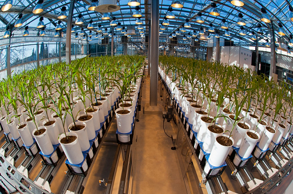
In this dataset, there are two genotypic panels
(population) and two water scenarios
(Scenario), well-watered (WW) and water deficit (WD). The
first population contains 60 genotypes (geno) with 14
replicates: 7 in WW and 7 in WD. The second population contains 30
genotypes with 8 replicates, 4 in WW and 4 in WD.
data("PhenoarchDat1")The leaf area and the biomass of individual plants are estimated from
images taken in 13 directions. Briefly, pixels extracted from RGB images
are converted into biomass and leaf area ((Brichet et al. 2017)). Time courses
for biomass (Biomass) and leaf area (LeafArea)
are expressed as a function of thermal time (TT). The
height of each plants (PlantHeight) is also estimated from
the pictures. The number of visible leaves (LeafCount) is
counted at least once a week on each plant. To prevent errors in leaf
counting, leaves 5 and 10 of each plant are marked soon after
appearance. The phyllocron is calculated as the slope of
the linear regression of number of leaves on thermal time before the
beginning of the water deficit.
The unique ID of the plant is recorded (pos), together
with the pot position in row (Row) and in column
(Col).
| Date | pos | Genotype | Scenario | population | Row | Col | Biomass |
|---|---|---|---|---|---|---|---|
| 2017-04-18 | c15r1 | GenoA50 | WW | Panel1 | 1 | 15 | 0.7984986 |
| 2017-04-20 | c15r1 | GenoA50 | WW | Panel1 | 1 | 15 | 4.6488698 |
| 2017-04-21 | c15r1 | GenoA50 | WW | Panel1 | 1 | 15 | 7.9376467 |
| 2017-04-18 | c16r1 | GenoA15 | WD | Panel1 | 1 | 16 | NA |
| 2017-04-20 | c16r1 | GenoA15 | WD | Panel1 | 1 | 16 | 4.4885912 |
| 2017-04-21 | c16r1 | GenoA15 | WD | Panel1 | 1 | 16 | 9.3175224 |
Example 3: Tip root data set
The tip root data set was obtained during an experiment performed at the RootPhAir platform (Louvain-La-Neuve University). This platform consists of two aeroponic tanks of 495 plants located in the same greenhouse. Plants are held on a strip containing 5 plants, with 99 strips per tank. Sprinklers are placed in the bottom of the tanks and spray a nutrient solution. Strips move constantly and plants are pictured when the strip passes in front of the camera. Plants are pictured every two hours. The root system is described in two dimensions, with the root tip position in depth and width (tipPos_y and tipPos_x respectively) deduced from image analysis.
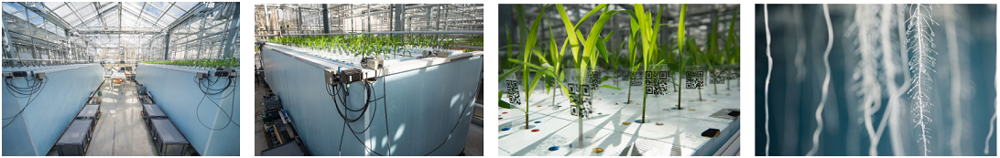
For each genotype (Genotype), the tip position
(tipPos_x and tipPos_y) of the main root was
tracked over time (Time) for each plant
(plantId). Plant coordinates are defined using the strip
number (Strip) and the position on the strip
(Pos), from 1 to 5.
data("RootDat1")| Exp | thermalTime | Genotype | plantId | Tank | Strip | Pos | tipPos_x | tipPos_y | Time |
|---|---|---|---|---|---|---|---|---|---|
| 1 | 116.0433 | 116 | A_01_2 | A | 1 | 2 | 1.4857143 | 3.042857 | 2016-11-07 13:15:41 |
| 1 | 124.3465 | 116 | A_01_2 | A | 1 | 2 | 0.0535714 | 2.385714 | 2016-11-08 00:26:39 |
| 1 | 126.3715 | 116 | A_01_2 | A | 1 | 2 | -0.0785714 | 2.014286 | 2016-11-08 02:41:01 |
| 1 | 128.2498 | 116 | A_01_2 | A | 1 | 2 | -0.2357143 | 2.042857 | 2016-11-08 04:55:31 |
| 1 | 137.7153 | 116 | A_01_2 | A | 1 | 2 | 1.4892857 | 3.042857 | 2016-11-08 18:20:01 |
| 1 | 141.3060 | 116 | A_01_2 | A | 1 | 2 | -0.1071429 | 2.314286 | 2016-11-08 22:48:26 |
NOTE: In this platform, plants are constantly moving therefore observations at any particular time will always include only a limited number of plants. As a consequence, it is not possible to perform a spatial analysis per time point, but the other functions for outliers detection and longitudinal modeling are available and illustrated in various tutorials. Estimates for dynamical parameters can be submitted to spatial analysis in the statgenSTA package.
Data preparation
The first step when modeling platform experiment data with the
statgenHTP package is creating an object of class TP (Time
Points). In this object, the time points are split into single
data.frames. It is then used throughout the statgenHTP
package as input for analyses.
NOTE: It is possible to use the functions in this package with a phenotype measured at one time point only. In that case, the user has to create a column with time point containing the unique measurement time.
A TP object can be created from a
data.frame with the function createTimePoints.
This function does a number of things:
- Quality control on the input data. For example, warnings will be given when more than 50% of observations are missing for a plant.
- Rename columns to default column names used by the functions in the
statgenHTP package. For example, the column in the data containing
variety/accession/genotype is renamed to “genotype”. Original column
names are stored as an attribute of the individual
data.framesin theTPobject. - Convert column types to the default column types. For example, the column “genotype” is converted to a factor and “rowNum” to a numeric column.
- Convert the column containing time into time format. If needed, the
time format can be provided in
timeFormat. For example, with a date/time input of the form “day/month/year hour:minute”, use %d/%m/%Y %H:%M. For a full list of abbreviations see the R package strptime. NOTE: when the input time is just a numeric, the function will convert it to time from 01-01-1970 (origin time of the package lubridate). - Add columns
checkandcheckGenotypeswhenaddCheck=TRUE. - Split the data into separate data.frames by time points. A
TPobject is alistofdata.frameswhere eachdata.framecontains the data for a single time point. If there is only one time point the output will be alistwith only one item. - Add a
data.framewith columnstimeNumberandtimePointas attribute “timePoints” to theTPobject. This data.frame can be used for referencing time points by a unique number.
NOTE: It is possible to transform a TP object back into a data.frame with the
as.data.frame()function.
Example 1
For the first data set (see section 3.1), a
TP object is firstly created containing all the time
points.
## Create a TP object containing the data from the Phenovator.
phenoTP <- createTimePoints(dat = PhenovatorDat1,
experimentName = "Phenovator",
genotype = "Genotype",
timePoint = "timepoints",
repId = "Replicate",
plotId = "pos",
rowNum = "y", colNum = "x",
addCheck = TRUE,
checkGenotypes = c("check1", "check2", "check3", "check4"))
#> Warning: The following plotIds have observations for less than 50% of the time points:
#> c24r41, c7r18, c7r49
summary(phenoTP)
#> phenoTP contains data for experiment Phenovator.
#>
#> It contains 73 time points.
#> First time point: 2018-05-31 16:37:00
#> Last time point: 2018-06-18 16:37:00
#>
#> The following genotypes are defined as check genotypes: check1, check2, check3, check4.In this data set, 3 plants contain less than 50% of the 73 time points. The user may choose to check the data for these plants and eventually to remove them from the data set.
The function getTimePoints allows to generate a
data.frame containing the time points and their numbers in
the TP object. Below is an example with the first 6 time
points of the phenoTP:
## Extract the time points table.
timepoint <- getTimePoints(phenoTP)| timeNumber | timePoint |
|---|---|
| 1 | 2018-05-31 16:37:00 |
| 2 | 2018-06-01 09:07:00 |
| 3 | 2018-06-01 11:37:00 |
| 4 | 2018-06-01 14:37:00 |
| 5 | 2018-06-01 16:37:00 |
| 6 | 2018-06-02 09:07:00 |
The TP object just created is a list with
73 items, one for each time point in the original
data.frame (called “PhenovatorDat1”). The option
experimentName is used for identifying the data set and is
a requirement. The column “Genotype” in the original data is renamed to
“genotype” and converted to a factor. The columns “Replicate” and “pos”
are renamed and converted likewise. The option repId is
used when replication blocks were defined in the design (i.e. one block
contains one full replicate of all the genotypes). In that case, the
column containing the replicate block should be specified here. The
newly created column “plotId” needs to be a unique identifier for a plot
or a plant. The columns “y” and “x” are renamed to “rowNum” and “colNum”
respectively. Simultaneously, two columns “rowId” and “colId” are
created containing the same information converted to a factor. This
seemingly duplicate information is needed for spatial analysis. The
information about which columns have been renamed when creating a
TP object is stored as an attribute of each individual
data.frame in the object. The option addCheck
is set as TRUE to specify that the genotypes listed in
checkGenotypes are reference genotypes (or checks). This
option will create a column “check” with a value “noCheck” for the
genotypes that are not in checkGenotypes and the name of
the genotype for the checkGenotypes. Also a column
“genoCheck” is added with the names of the genotypes that are not in
checkGenotypes and NA for the
checkGenotypes (see statgenHTP tutorial: 3. Correction
for spatial trends). These columns are necessary for
fitting models on data of an augmented design (Piepho and Williams 2016).
Data visualization
Several plots can be made to further investigate the content of a
TP object.
Layout plot
The first type of plot displays the layout of the experiment as a
grid using the row and column coordinates. The default option creates
plots of all time points in the TP object. This can be
restricted to a selection of time points using their number in the
option timePoints. If repId was specified when
creating the TP object, replicate blocks are delineated by
a black line. Missing plots are indicated in white enclosed with a bold
black line. This type of plot allows checking the design of the
experiment.
## Plot the layout for the third time point.
plot(phenoTP,
plotType = "layout",
timePoints = 3)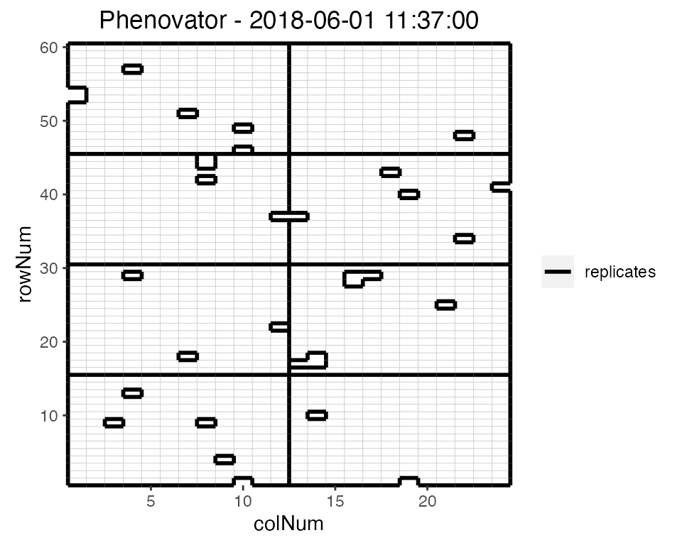
Here, the third time point is displayed which corresponds to the
1st of June 2018 at 11:37. Note that the title can be
manually changed using the title option. This plot can be
extended by highlighting interesting genotypes in the layout. Hereafter
the check genotypes are highlighted:
## Plot the layout for the third time point with the check genotypes highlighted.
plot(phenoTP,
plotType = "layout",
timePoints = 3,
highlight = c("check1", "check2", "check3", "check4"))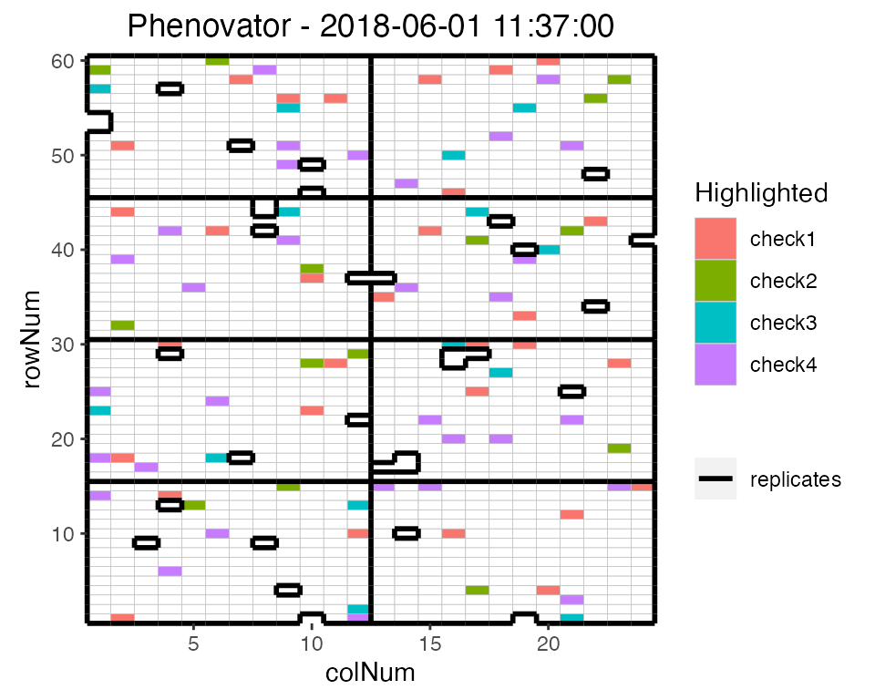
It is possible to add the labels of the genotypes to the layout.
## Plot the layout for the third time point.
plot(phenoTP,
plotType = "layout",
timePoints = 3,
highlight = c("check1", "check2", "check3", "check4"),
showGeno = TRUE)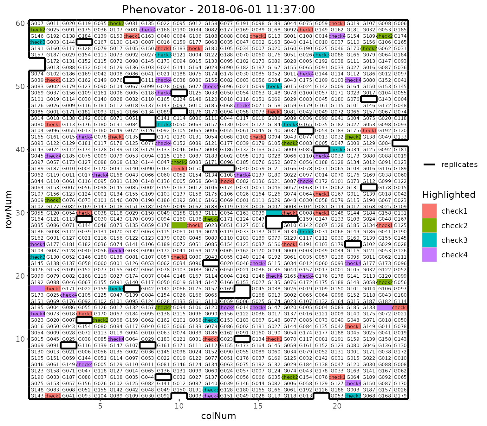
We can visualize the raw data of a given trait on the layout, as a heatmap. This type of plot gives a first indication of the spatial variability at a given time point. This can be further investigated with the spatial modeling (see statgenHTP tutorial: 3. Correction for spatial trends).
## Plot the layout for the third time point.
plot(phenoTP,
plotType = "layout",
timePoints = 3,
traits = "EffpsII")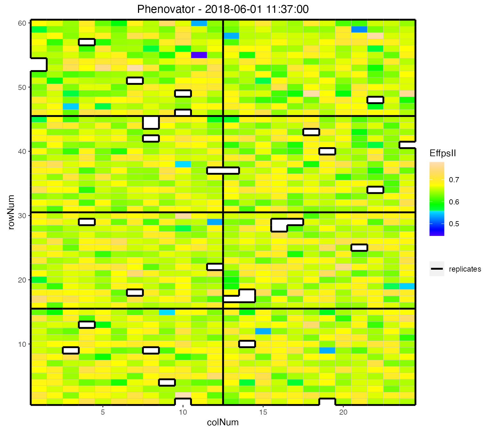
Raw data plot
Raw data can be displayed per genotype with one color per plotId. By
default all genotypes are used but this can be restricted to a subset of
genotypes using the parameter genotypes. By default, data
is plotted as dots but this can be changed to lines by setting
plotLine = TRUE.
NOTE: the color of the plotId is the same whether point or lines are used. However, the color might change between vignettes. The color is not assigned per plotId but generated using a color shade depending on the total number of plotIds that are visualized.
The plot of the raw data per genotype gives a first indication of the plant-to-plant variability and may already help visualizing strange points or plants for a genotype. This will have to be confirmed with the detection of (i) individually outlying observations (see statgenHTP tutorial: 2. Outlier detection for single observations) and (ii) outlying series of observations (see statgenHTP tutorial: 4. Outlier detection for series of observations)
## Create the raw data time courses for three genotypes.
plot(phenoTP,
traits = "EffpsII",
plotType = "raw",
genotypes = c("G001", "G002", "check1"))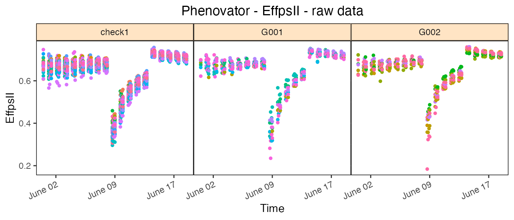
Boxplot
Boxplots can be made to visually assess the variability of the
trait(s) in the TP object. By default a box is plotted per
time point for the specified trait using all time points. For example,
in the Phenovator data, the variability is larger at the beginning of
the experiment (before the change in light) and is reduced at the end
(after the change of light intensity).
## Create a boxplot for "EffpsII" using the default all time points.
plot(phenoTP,
plotType = "box",
traits = "EffpsII") 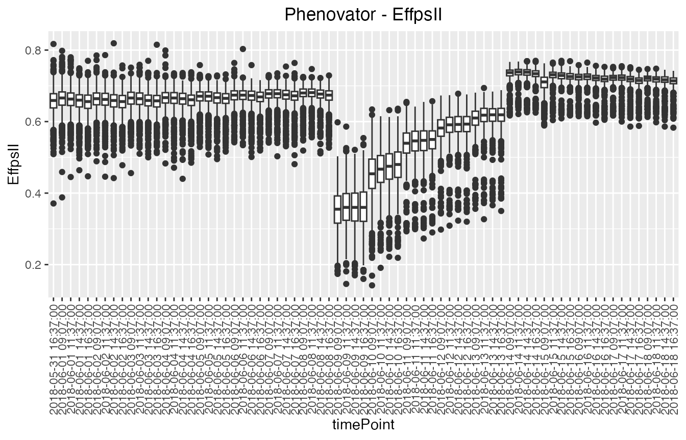
Colors can be applied to further investigate the variability of a
factor within time points using the option colorBy. For
example here, we investigate the variability between replicates within
time point 1 to 5, with one box per replicate per time point.
## Create a boxplot for "EffpsII" with 5 time points and boxes colored by "repId" within
## time point.
plot(phenoTP,
plotType = "box",
traits = "EffpsII",
timePoints = 1:5,
colorBy = "repId")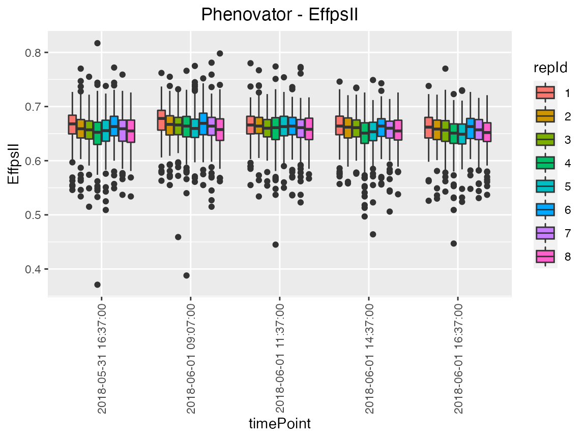
The option groupBy allows assessing the variability of a
factor combining multiple time points. For example, we investigate the
replicate variability of grouped time points 1 to 5, with one box per
replicate.
## Create a boxplot for "EffpsII" with 5 time points and boxes grouped by "repId".
plot(phenoTP,
plotType = "box",
traits = "EffpsII",
timePoints = 1:5,
groupBy = "repId")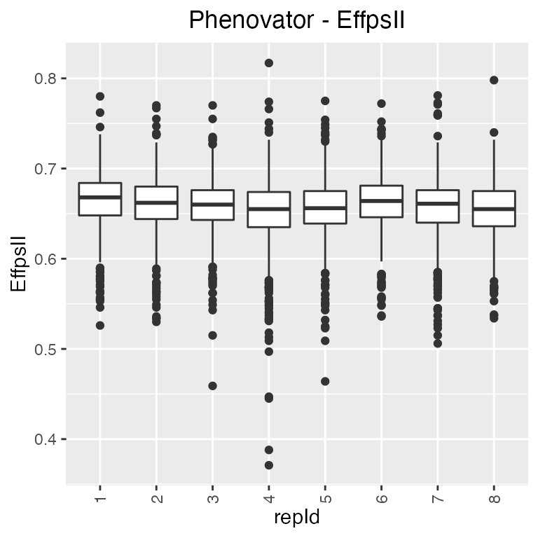
The boxes for the can be ordered using orderBy. Boxes
can be ordered alphabetically (“alphabetic”) or by the group mean
(“ascending”, “descending”).
Correlation plot
Finally, a plot of the correlations between the observations in time for a specified trait can be made. The order of the plot is chronological and by default all time points are used.
## Create a correlation plot for "EffpsII" for a selection of time points.
plot(phenoTP,
plotType = "cor",
traits = "EffpsII",
timePoints = seq(from = 1, to = 73, by = 5))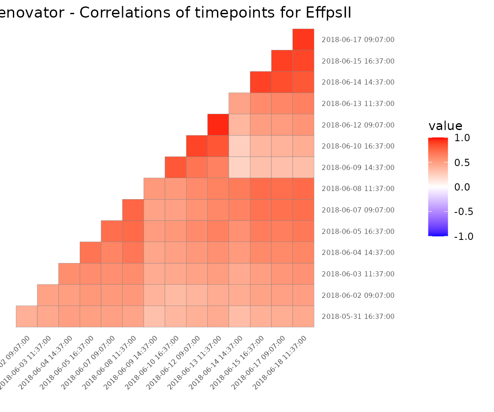
NOTE: Each plot can be exported to a pdf document by using the
outFileoption containing the name of the document.
Examples
Example 2
A second TP object is created containing all the
observations in time:
phenoTParch <- createTimePoints(dat = PhenoarchDat1,
experimentName = "Phenoarch",
genotype = "Genotype",
timePoint = "Date",
plotId = "pos",
rowNum = "Row",
colNum = "Col")
summary(phenoTParch)
#> phenoTParch contains data for experiment Phenoarch.
#>
#> It contains 33 time points.
#> First time point: 2017-04-13
#> Last time point: 2017-05-15
#>
#> No check genotypes are defined.The “phenoTParch” object just created is a list with 33
items, one for each time point in the original data.frame
(called “PhenoarchDat1”, see section 3.2). We can
visualize the layout and the raw data the same way as for the Phenovator
data.
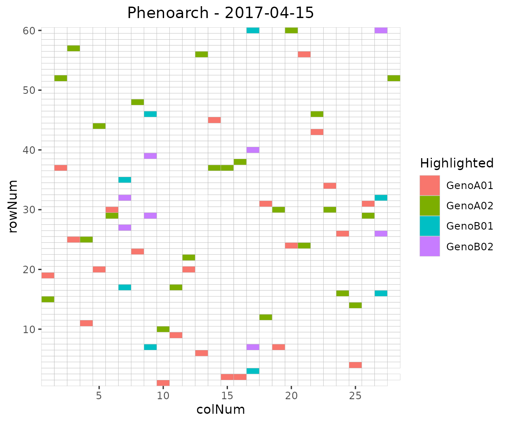
Note that for the raw data, we can use the geno.decomp
option to split the genotypes using the water scenario. Doing so, we can
visualize the difference between the irrigation levels for two
genotypes: the leaf area in WW is larger than in WD and the slope of the
leaf area progression also seems to be larger:
plot(phenoTParch,
traits = "LeafArea",
plotType = "raw",
genotypes = c("GenoA01", "GenoA02"),
geno.decomp = "Scenario")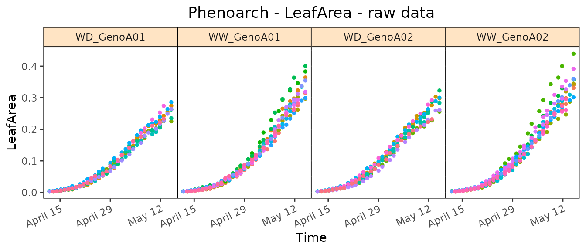
Example 3
A third TP object is created containing all the time
points:
rootTP <- createTimePoints(dat = RootDat1,
experimentName = "UCL1",
genotype = "Genotype",
timePoint = "Time",
plotId = "plantId",
rowNum = "Strip",
colNum = "Pos")
summary(rootTP)
#> rootTP contains data for experiment UCL1.
#>
#> It contains 16275 time points.
#> First time point: 2016-11-06 12:58:47
#> Last time point: 2016-11-15 01:32:08
#>
#> No check genotypes are defined.As explained in section 3.3, there is no common
time point for all the plants, i.e. no date at which all plants were
pictured. Instead, plants are constantly moving and pictures are taken
every 20 minutes. Hence, each row of the data.frame
contains a unique time point. As a consequence, the “rootTP” object just
created is a list with 16,275 items, one for each time
point in the original data.frame (called “RootDat1”).
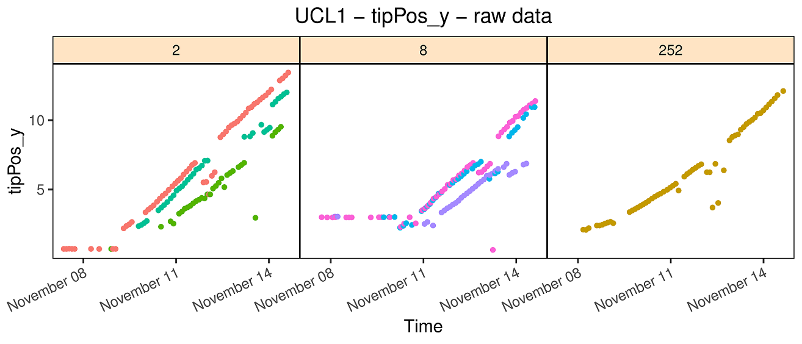